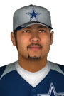

|
|
|  |
Fans in Dallas Rally Behind Wayward Cat Monday, April 1st , 2002 After Dallas's latest victory, it seemed like the last thing anyone wanted to talk about was the game itself. Instead, the focus was on a cat that somehow wandered onto the field at Cowboys Park in the top of the second inning. The tiny tabby scampered from near the visitors' dugout all the way to the left field wall, stopping the action for a good ten minutes. Outfielder Ramon Lobaton stood motionless as the cat darted past. "I'm not going to try to catch that thing," he said later, "he was moving pretty fast. And I'm more of a dog person myself." College intern Matt Field was given the unenviable task of capturing the frenzied feline, and the fans were transfixed as they watched the thrilling chase unfold before them. Matt finally caught up to the cat and grabbed it on the warning track, but getting the scrappy stray off the field proved to be tricky. "He wasn't very cooperative," the 20-year-old explained, "and I have the scars to prove it. But we made it eventually." The cat's mad dash, meanwhile, was replayed later on the stadium's video screens, which pumped up the crowd and maybe even the players, as they went on to victory. Fans immediately flooded social media offering to adopt the cat and nominating him as the team's official "meows-cot." Reportedly, the cat is now at the Dallas Humane Society, where he will be kept for observation. If no owner can be identified, then the cat will be placed for adoption. "Sure, we'd like to keep him," said Cowboys spokesman Ben Cooney. "If he can bring us some more victories, we'll even give him a spot on the roster!" |


|